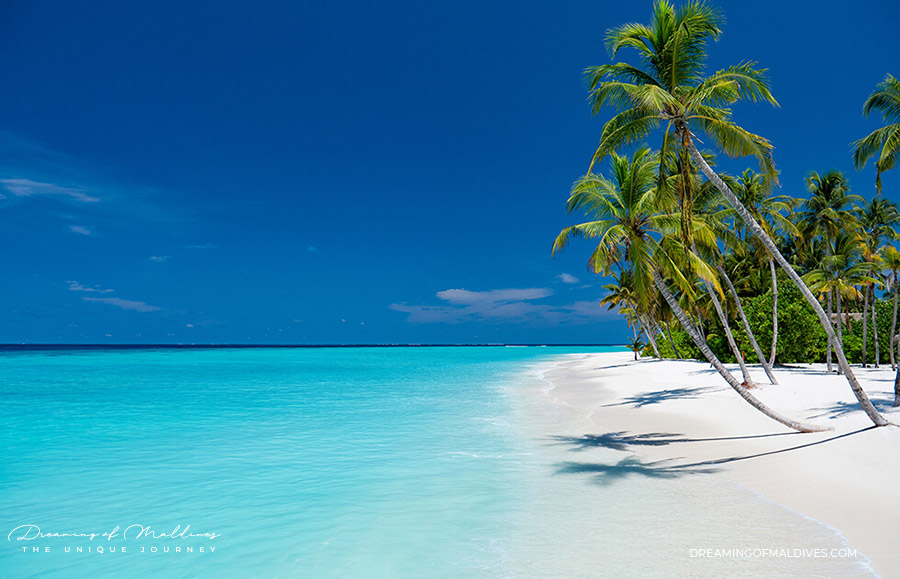
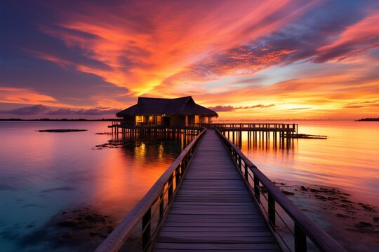
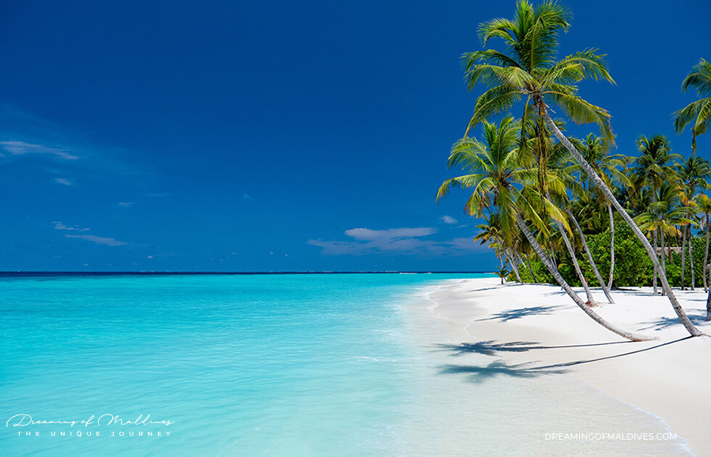
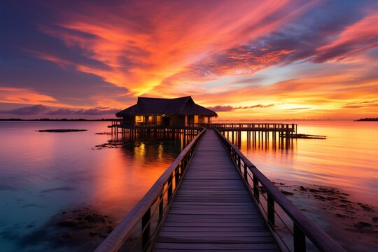
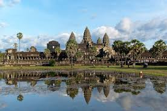

Maldives
Experience the stunning blue waters and white sandy beaches of the Maldives.
 Discover the best destinations, beaches, temples, and more from around the world.
Experience the stunning blue waters and white sandy beaches of the Maldives.
 Discover the beauty and history of the Angkor Wat temple complex.

Stroll through the serene bamboo forest in Arashiyama, Kyoto.